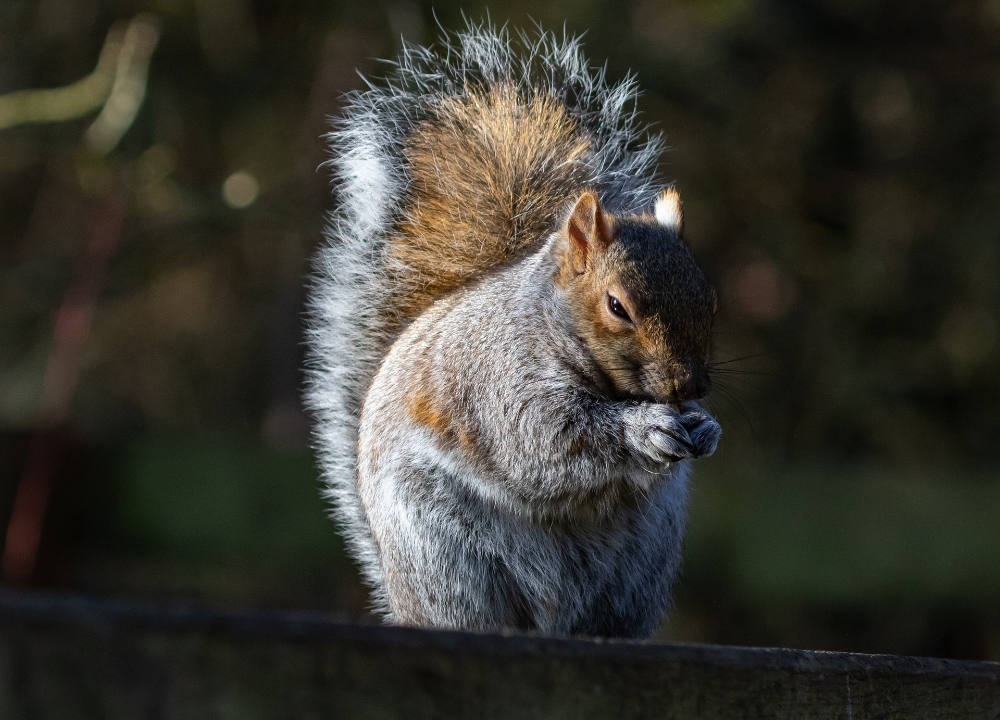

Pests!
Let's face it. If you are growing food, it's not just food for you. Pests may be the most frustrating part of attempting to produce anything. Pests are not limited to just bugs that will destroy you crops; birds, squirrels, rabbits, mice, basically anything that flies or crawls on the ground will want a piece.
Lets start with bugs.
The temptation to use pesticides can be overwhelming. An aphid, locust, horned worm, or grub infestation can completely decimate an entire garden. Surprisingly, these can be your easiest pests to get rid of.
Ground Pests
Neem oil is very effective at removing pests from under the soil. These live counter pests are parasites that attack the burrowing bugs that kill crops. diatomaceous earth is also a handy, chemical free, method of getting rid of ground pests. This miracle dust is like micro sand that gets in between the exoskeleton of insects and dehydrates them. In any case, you will want to make sure that you are not harming beneficial insects who will protect your crops.
Above Ground Bugs
Some of the insects that live above ground are tough and destructive. Let's start with aphids. If you want to get rid of or prevent aphids, get rid of any ants living around your garden. Aphids produce a waste product called honeydew that ants absolutely love. Ants love it so much they will actually defend an aphid infestation from predators. Ants are relatively easy to get rid of though. If they are in a spot that where it won't harm your crops, a pot of boiling water into the ant hill is a fairly straightforward way to wipe out a colony. It seems cruel but so does starving if you are reliant on your crop. water with a touch of soap can help deter most leaf eating insects.
Partner Planting
Planting marigolds, basil, rosemary, and garlic along with your crops is a great way to prevent a lot of these insects as well. their pungent aroma helps to steer damaging insects elsewhere. If done Properly, the partners can actually produce nutrients beneficial to the other plants.
Larger Insects
Most of the methods already covered will take care of your insect problems.in the event of a runaway infestation, you can use this emergency method. This method should only be used if you are about to lose the whole garden anyway and will utilize chickens if you have them.
- remove any fruit or human edible material from the garden except root vegetables. ensure there are no beans in the garden because they will kill your chickens.
- section off the garden with a temporary fence if you can to prevent the chickens from escaping
- let your chickens loose in the garden for one or two days.
The chickens will go absolutely nuts for the fat juicy bugs. With only two days of time in the garden, they will fertilize and airate your soil, and eat almost anything that crawls our of the area. The reason this is an emergency measure is that they will also peck the leaves off off any plant they like. They will likely leave tomato plants alone because they are nightshades but everything else will be drastically traumatized and you will likely loose a large part of your crop.
Rodents and Birds
Birds
Birds are relatively easy to deter. Normally if you have something shiney in or around your garden they wont hang out because the flashing makes it hard for them to see predators and it annoys them. You can also train birds to be a deterrent by painting rocks as ground berries like strawberries so that when you actually begin to have fruit the birds will ignore them thinking they are rocks.
Rabbits
Rabbits can also be relatively easy to deter. A short lattice work fence tends to work well. Smell deterrents also seem to work well. I haven't tried it myself, but human hair in the garden is supposed to work well as well.
Moles
not easy to get rid of but don't really seem to do alot of damage to a garden without root vegetables. I have found sonic stakes, and castor granules work quite well at keeping them away.Squirrels
The bane of gardens, the demon spawn of the rodent world. Squirrels eat it all. The neighborhood squirrels in my area have destroyed my mushroom crop, dug up my sprouts, eaten my blueberries, figs, strawberries, and tomatoes. these demonic rodents are tenacious and are forever undaunted. I have not found anything to deter them aside from having an outside dog who likes chasing them. If you have any sure fire squirrel deterrent, please email me at the link below.